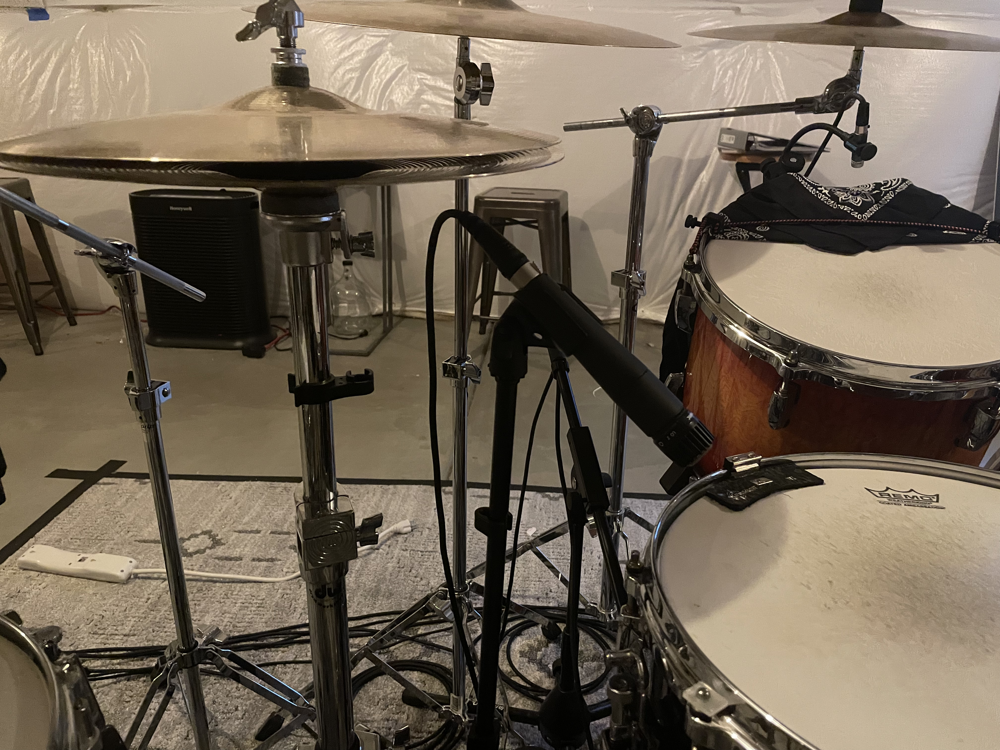
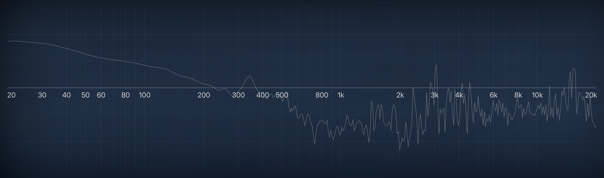
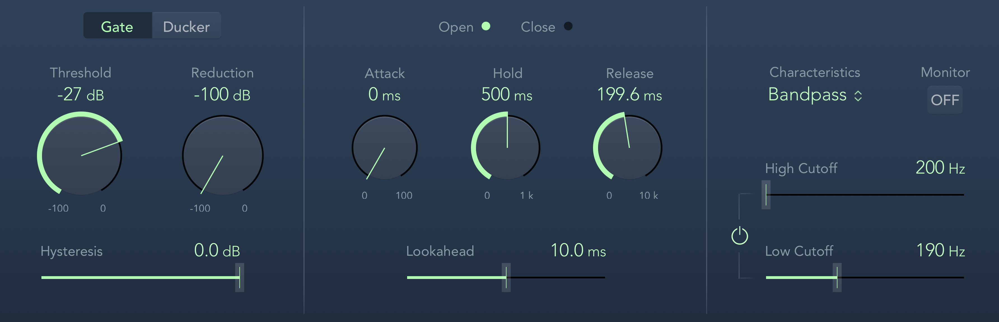

My Cymbal Bleed Saga
Posted on February 27, 2022

It’s been a tough week to stay focused. Hell, the news this morning alone was pretty exhausting. The carnage in Ukraine is bad enough, but this whole conflict has really broken the brains of a lot of people in the political circles I’m in.
Maybe someone can clear this up for me, but I just have a difficult time getting behind invading a country that didn’t attack you or your allies. And don’t get it twisted, I’m no big fan of America’s foreign policy, but let’s put our grown–up pants on and realize two things can be wrong at the same time.
There’s nothing like using the enduring frustrations of recording live drums to take your mind off of things. I have some recording projects on the horizon, and although things can fall apart in a jiffy (see: peace in Europe), I nonetheless wanted to get my drums in ship shape.
Aside from things like retuning the drums, there are a few finer details I’ve been wanting to iron out. In the last couple of weeks, I set my sights on conquering cymbal bleed.
Now, I get that mic bleed on a drum set is like snare dum buzz: there’s really no way to get rid of it. When you have so many (loud) drums and so many mics, there’s no stopping a mic from picking up something it’s not supposed to. But I’m gonna try.
The first problem was the hi–hats bleeding into the snare mic. I decided to start on the engineering side of things, and use mixing as a last resort — my philosophy is to not use mixing to solve problems on the engineering side of things.
I poked around online, and one common piece of advice was to raise the cymbals up high and get them away from the drums. I pushed my hats as high as they could go on my stand’s 15–inch rod (I actually just picked up a 21–inch rod just in case). This cut down on the bleed a little bit; the hats peaked on the snare mic around -18db instead of -15.
Moving the hats away from the snare towards the left side of the kit helped quite a bit, but this made the hats very challenging to play comfortably, especially for double–sticking maneuvers. So I decided to play around with the mic positioning. I’m using a tried and true SM57 on the snare. It’s a directional mic (specifically a cardioid), and like all directional mics, there’s a null point: a spot where the mic will have the hardest time picking up sound.
The null point is typically right behind the capsule, so I decided to put the mic at a sharp angle to get the back of the mic between the snare and the hats:
This was quite effective. The hats were reduced to around -22db on the snare mic. I was concerned that the mic angle would mess with the sound of the snare. But since I kept the capsule in the same spot, all that happened was that the snare was had a tad bit more ring (and that’s what the SnareWeight is for).
The ultimate test was to record steady notes on just the hi–hat, and then mute and unmute the snare top mic to see if it changes the sound of the hats. I was looking for a change in volume level and in panning — if the hi–hats get much louder and move towards the center of the stereo spread with the snare mic unmuted, then I’ve got some problematic bleed. But thankfully, I didn’t hear that at all.
After these improvements, I realized that I would need to rethink my mixing strategy. Compression (with markup gain) will make softer sounds louder, while my preferred snare EQ curve has a boost around 2kHz which makes the bleed sound much worse. As is the case with recording drums, the whole game is finding the right compromises.
The next thing to tackle was the floor tom and ride cymbal. Typically, I wasn’t getting problematic bleed on the floor tom mic, but the weirdest thing would happen when I would really lay into my ride. See if you can hear it:
It sounds like someone tapping their finger against the mic. In fact, the first time I noticed it, I thought I hit the mic with my stick.
I tried making some adjustments to the ride position, but nothing reasonable would solve the problem. So eventually I just said “the hell with it” and put the ride a good 18 inches above the floor tom.
Lo and behold, this fixed the “slapping” sound I was getting, but unfortunately, the ride was in a very uncomfortable spot. Sadly, I have yet to fix this problem on the engineering side of things. The only way to cut down on the slapping was to get the floor tom mic underneath the ride, which is tough to do with my 24” Bash Ride (I have to make sure there’s enough clearance to keep the cymbal from hitting the mic).
So I decided I would have to fix this on the computer. EQ was not going to be an option, since the slap occupies the whole frequency spectrum, because of course it does. Even more senseless is the low–end boost from 100Hz and below:
My next option was a gate. I know, gates are gross, but I wanted to see where this would take me.
ICWYW, gates work by muting a mic when the signal falls below a certain volume level. When poorly used, gates can sound awful as the mic will sound like it’s repeatedly being switched on and off. But Logic’s gate is pretty powerful, and gives you several options to get a natural sound on your drums:
The key is the hold time and the release time. With these parameters, the sound of the gate closing can very closely match the natural decay of your drums.
As a nice bonus, the gate also has a filter option. With the filter turned on, the signal will have to pass the threshold and be in a particular frequency range for the gate to open.
I went ahead a slapped a gate on the rack tom and the floor tom. Overall, I’m pretty happy with the sound. Gates can still need some adjustment track to track or even within a song; if a tune has radical changes in dynamics, automation on the gate’s threshold will be needed to make sure softer notes will still be picked up (you could also just shut the plugin off for these passages).
I did come across some interesting mixing solutions on this journey. One trick is to duplicate a mic track (effects and all), invert the phase of the second track while cranking the compressor ratio all the way up. With one of the tracks inverted, the two will cancel each other out and the mic will be silent. But anytime you hit the drum, the second compressor will attenuate the inverted signal more and the cancellation will be lost, allowing the drum the ring out.
It sounds crazy, but it works. Unfortunately, it colors the sound of the drum a little bit too much for my tastes.
Another interesting solution I found involved using some triggers. I know, triggers are gross, but most DAWs have gates with a side chain option. This allows a tom mic gate to be set off by a separate track.
You can probably see where this is going: if you side–chain a microphone’s gate to a trigger, you can set your gate threshold very low. Triggers work by generating a signal using a contact mic that actually touches the drumhead, and it’s incredibly difficult for a cymbal to resonate the drumhead enough for the trigger to output a signal. With the trigger, you wouldn’t need to worry about automating the gate parameters to respond to changes in dynamics.
Unfortunately, I don’t have any drum triggers. And the bigger issue is that I have nowhere to plug triggers into my interface. I have been eyeballing a Universal Audio preamp that has eight total inputs: four mic preamps and four line inputs. I was interested in picking it up to help record other instruments like guitar, but I think I would use those line inputs for some triggers. Many triggers just use quarter–inch connections, so it ought to work. I don’t need the triggers to sound good, I just need the signal to get inside my computer. But it might be a sec before I make this happen…
Tags: 2022 • Music Technology